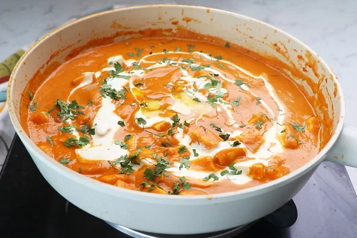

Paneer Butter Masala

Preparation Time: 30 minutes
Difficulty Level: Medium
Ingredients:
- 200g paneer (cubed)
- 2 tomatoes (pureed)
- 2 tbsp butter
- 1/2 cup fresh cream
- 1 onion (finely chopped)
- 1 tsp ginger-garlic paste
- Salt and spices (garam masala, chili powder)
Step-by-step Instructions:
- Heat butter in a pan on medium flame.
- Add chopped onions and sauté until golden.
- Add ginger-garlic paste and cook for a minute.
- Pour tomato puree and cook until oil separates.
- Add spices and mix well.
- Add paneer cubes and cook for 5 minutes.
- Add cream and simmer for 2-3 minutes.
- Serve hot with roti or naan.